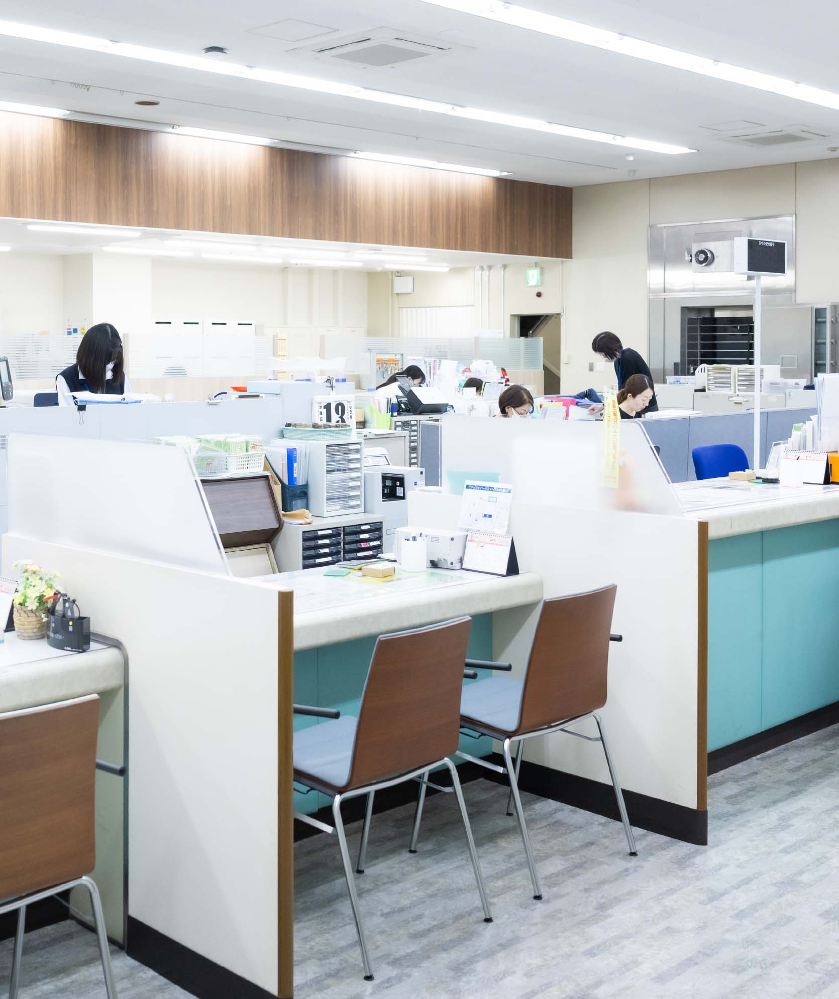

職種紹介Job introduction


ダミー文章です。奈良信用金庫のことを知っていただく入門編コンテンツ。皆さんにまずは知って欲しい情報をぎゅっとまとめてご紹介します。
職種紹介
営業店
融資
お客さまの融資（事業資金や生活資金の貸付）に関する相談受付や融資実行の可否を判断するための情報収集・稟議書作成などを行います。
営業店
マネーアドバイザー
個人のお客さま一人ひとりのライフプランに合わせた資産形成の相談や、ニーズに合わせた金融商品販売（国債、投資信託、保険商品等）を行います。
営業店
窓口
預金(普通預金や定期預金など)の入出金・公共料金の収納など、預金や振込に関する業務や付随する店頭セールスを行います。
営業店
後方事務
窓口で受け付けた取引の書類の整備・チェック、コンピューターへの入力、電話応対などのサポート業務を行います。
総合企画本部
奈良信用金庫全体の経営戦略の立案、新商品の立案、各種イベントやキャンペーンの企画による営業店の業務推進活動のサポートを行います。
資産管理本部
奈良信用金庫全体の予算編成・経理や動産不動産の管理、総代会運営、SNS・ホームページなどの広報活動、人事計画・人事制度の企画・運営、採用・人材育成、労務など多岐にわたる業務を行います。
経営管理本部
リスク管理の統括、各種リスクの実態把握・改善、貸出金管理やコンプライアンス遵守、リーガルチェックなどを行います。
証券運⽤
金庫の資金を国内外の債券や株式・リートで運用することで利益を生み出します。
融資審査本部
適切な融資のための審査、外国為替業務や代理業務などを通じた金融の円滑化を行います。
業務集中本部
営業店事務の集中化、事務管理、事務指導、金庫内システムの保守・運用
監査部
経営目標に向けて適切な業務が行われているか・法令が遵守されているかを検証します。
2016年入庫インタビューはこちら